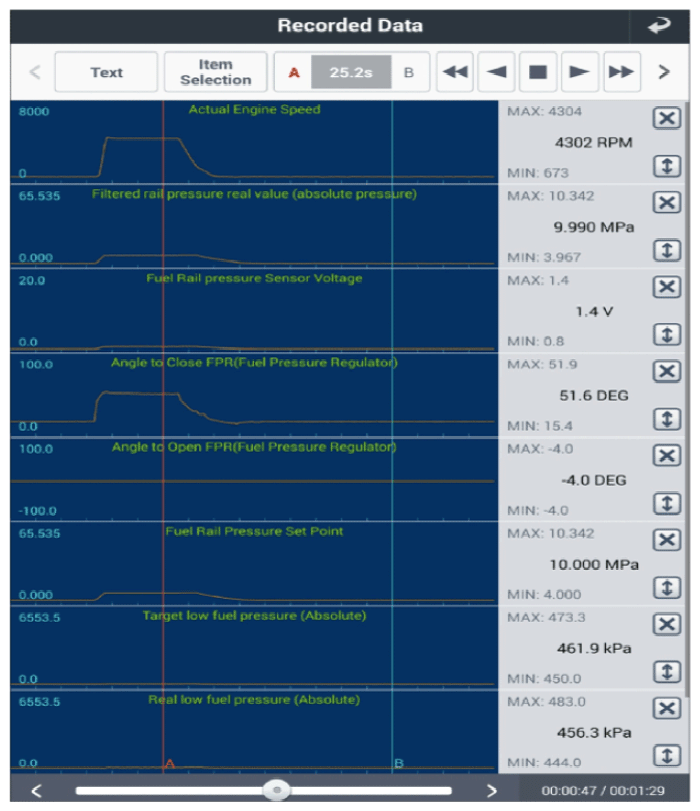

LEMON Manuals
: Even more car manuals for everyone: 1960-2025
Home
>>
Hyundai
>>
2022
>>
Elantra N Line, Standard Trans
>>
Repair and Diagnosis
>>
Engine Performance
>>
System
>>
Engine Control System Diagnosis - 1.6L (Except HEV) (1 Of 6)
>>
DTC P0087-00: Fuel Rail/System Pressure - Too Low
>>
DTC Information And Inspection
>>
Monitor Current Data
>>
Inspect Fuel Pressure Current Data
Inspect Fuel Pressure Current Data
Turn ignition switch OFF and connect GDS.
Turn ignition switch ON.
Warm up engine to normal operating temperature.
Select the "Current Data" of the GDS and check the relevant items as follows.
Reference:
Current Data

Courtesy of HYUNDAI MOTOR AMERICA